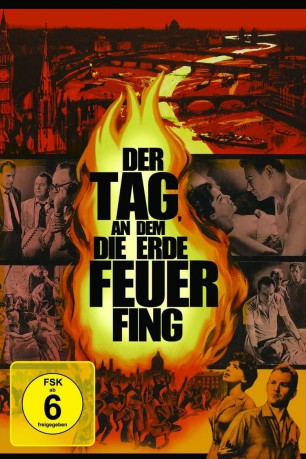

#9373 Der Tag, an dem die Erde Feuer fing
Alternativ: The Day the Earth Caught Fire
Auszeichnungen: 1 BAFTA-Awards gewonnen
 
 IMDB-Wertung: 7.2 / 10
IMDB-Wertung: 7.2 / 10  Metascore: 0
Metascore: 0 
Seltsame Naturkatastrophen brechen plötzlich über die Erde herein: Schneestürme toben durch New York, Wüsten werden überschwemmt und Hitzewellen rollen über Europa. Panik bricht aus. Die Reporter Maguire und Stenning finden heraus, daß Russen und Amerikaner zeitgleich auf den beiden Polen Atomexplosionen ausgelöst haben. Dabei wurde die Erde aus ihrer Umlaufbahn geworfen und steuert auf die Sonne zu. Gebannt - aber machtlos - verfolgen Maguire, Stenning und seine Geliebte die Anstrengungen der Supermächte, die Erde zu retten...
Jahr: 1961
Dauer: 94 Minuten
FSK: 6
Land: England Studio: OstalgicaTonspuren:
Untertitel:
Auflösung: 1080p (1920x1040) Größe: 9000 MB
Genre: Drama, Sci-Fi, Liebe
Regisseur: Val Guest
Drehbuch: Wolf Mankowitz
Soundtrack: Stanley Black
Darsteller:
- Janet Munro als Jeannie Craig
 Leo McKern als Bill Maguire
Leo McKern als Bill Maguire- Edward Judd als Peter Stenning
 Michael Goodliffe als 'Jacko' Jackson - Night Editor
Michael Goodliffe als 'Jacko' Jackson - Night Editor- Renée Asherson als Angela
- Austin Trevor als Sir John Kelly
- John Barron als 1st Sub-Editor (uncredited)
 Timothy Bateson als Printer in Printroom (uncredited)
Timothy Bateson als Printer in Printroom (uncredited)- Peter Blythe als Copy Desk (uncredited)
 Michael Caine als Checkpoint Policeman (uncredited)
Michael Caine als Checkpoint Policeman (uncredited) Maxwell Craig als Harry's Club Patron (uncredited)
Maxwell Craig als Harry's Club Patron (uncredited)- John Dearth als Dick (uncredited)
- Pamela Green als Nurse at Laundrette (uncredited)
- Verina Greenlaw als Trixie (uncredited)
- Robin Hawdon als Ronnie (uncredited)
 Juba Kennerley als Harry's Club Patron (uncredited)
Juba Kennerley als Harry's Club Patron (uncredited)- George Merritt als Smudge (uncredited)
 Guy Standeven als Man at Funfair (uncredited)
Guy Standeven als Man at Funfair (uncredited) Marianne Stone als Miss Evans, Jeff's Secretary (uncredited)
Marianne Stone als Miss Evans, Jeff's Secretary (uncredited)- John Tatum als Policeman at Water Station (uncredited)
- Terry Walsh als Man (uncredited)
- Bernard Braden als 'Dave' Davis - News Editor
- Reginald Beckwith als Harry
- Gene Anderson als May
- Arthur Christiansen als 'Jeff' Jefferson - Editor
- Edward Underdown als Dick Sanderson
- Ian Ellis als Michael Stenning
- Jane Aird als Nanny (uncredited)
- Avril Angers als Mother (uncredited)
 Peter Butterworth als 2nd Sub-Editor (uncredited)
Peter Butterworth als 2nd Sub-Editor (uncredited) Norman Chappell als Hotel Receptionist (uncredited)
Norman Chappell als Hotel Receptionist (uncredited)- Geoffrey Chater als Pat Holroyd (uncredited)
- Harold Coyne als Editor (uncredited)
- Peter Evans als Man in Pub (uncredited)
- Aidan Harrington als Editor (uncredited)
- Fred Johnson als Archie (uncredited)
- Aileen Lewis als Demonstrator (uncredited)
- Reginald Marsh als Picture Editor (uncredited)
- Jim McManus als Man at Water Station (uncredited)
- Carmel McSharry als Woman Lost in Fog (uncredited)
- Charles Morgan als Foreign Editor (uncredited)
- Jim O'Brady als Man at Water Station (uncredited)
- John Rae als Sarge the Doorman (uncredited)
- Edith Raye als Woman in Crowd (uncredited)
- Jeff Silk als Policeman (uncredited)
- Graham Skidmore als Bit part (uncredited)
- Terence Soall als Undetermined role (uncredited)
Datei: X:\1961\Tag, an dem die Erde Feuer fing, Der (1961, FSK6, 1920x1040).mkv seit 17.08.2018
Festplatte: HD 1900-1970
 Es gibt insgesamt 22 Filme in der Gruppe '1961'
Es gibt insgesamt 22 Filme in der Gruppe '1961'